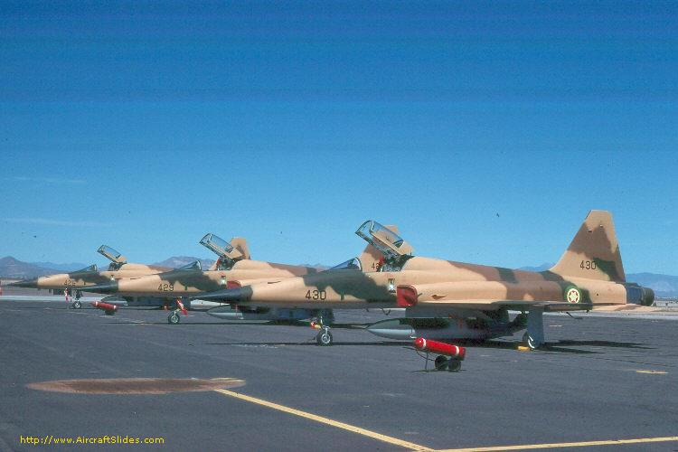

I designed this website as an assignment to my programming course The site will organize my experiance of the course all different page of the site containing all of my assignment story1 of the assignment is concerned with the size of the ethiopian army. The second history is concerned with the strength of the Ethiopian military Force.rmy.The third story is concerned about history of the ethiopian army. The third history is concerned about strength of the ethiopian army, The fourth story is concerned with Ethiopian air force
The Ethiopian armed forces, with about 438,000 personnel in uniform, constituted one of the largest and best-equipped militaries in sub-Saharan Africa. The defense establishment included the 230,000-member conscript army, supplemented by the 200,000-member People's Militia; the air force, with a personnel strength of 4,500; and the navy with, 3,500, with a personnel strength of which included a marine contingent. Not included in these figures were the 9,000-member Mobile Emergency Police Force and an unknown number of border guards. In addition to its duties as protector of the country's territorial integrity, the armed forces engaged in security and counterinsurgency operations against the government's political opponents. Constituting about 97 percent of the uniformed services, the army was the backbone of the armed forces. In early 1991, the army was organized into five revolutionary armies, which included thirty-one infantry divisions supported by thirty-two tank battalions, forty artillery battalions, twelve air defense battalions, and eight commando brigades. The army had expanded in size from 41,000 in 1974 to 50,000 in 1977, 65,000 in 1979, and 230,000 in early 1991. Ground order of battle was difficult to ascertain because of the army's rapid increase in size, frequent reorganization and redeployment of units, and constant reshuffling within the command structure. Units from the 200,000-member People's Militia augmented army divisions, especially in Eritrea and Tigray. The First Revolutionary Army had headquarters in Harer, the Second Revolutionary Army in Asmera, the Third Revolutionary Army in Kembolcha, the Fourth Revolutionary Army in Nekemte, and the Fifth Revolutionary Army in Gonder. Ethiopian armored and mechanized units had approximately 1,200 T-54/55 tanks and 100 T-62 tanks, all of Soviet manufacture, and about 1,100 armored personnel carriers (APCs), most of which were of Soviet origin. However, combat losses and constant resupply by the Soviet Union, East Germany, North Korea, and other communist nations reduced the reliability of these estimates. Artillery units possessed a variety of Soviet-manufactured light and medium guns and howitzers, rocket launchers, and heavy mortars. Air defense units had quick-firing antiaircraft guns and surface-to-air missiles. Because training in maintenance techniques had failed to keep pace with the influx of new equipment, weapons maintenance by the army was poor.
Ethiopia Military Strength (2021). Ethiopia National flag graphic. For 2021, Ethiopia is ranked
60 of 139 out of the countries considered for .
Ethiopia Military Strength (2021) For 2021, Ethiopia is ranked 60 of 139 out of the countries
considered for the annual GFP review. It holds a PwrIndx* rating of 0.9895 (0.0000
considered 'perfect'). Ethiopia is believed to have no programs for Chemical, Biological or
Nuclear Weapons. In the past, Ethiopia was not among the states believed to be involved in
the proliferation of ballistic missiles, such as the Scud. In 2002 the Ethiopian Defense Forces
had a strength of approximately 400,000 troops. This was roughly the same number
maintained .Available for military service: 8,794,315, age 16–49 (2010 est.)
Fit for military service: 4,757,344, age 16–49 (2010 est.)
Military age: 16-49 years old
Reaching military age annually: (2010 est.)
The Ethiopian army's origins and military traditions date back to the earliest history of Ethiopia. Due to Ethiopia's location between the Middle East and Africa, it has long been in the middle of Eastern and Western politics, and has been subject to foreign invasion and aggression. In 1991, the Soviet backed Derg regime was deposed by EPRDF rebel forces. EPRDF ordered all members of the military, including those of the ETAF, to report to detention camps set up throughout the country. EPRDF started reorganizing the air force soon after taking power. Shortly after taking complete control of the country, it selected about 50 officers and NCOs from the rehabilitation camps to reactivate a transport wing. In addition, more pilots and ground crew were returned to bring back the assets that were flown to neighboring countries by fleeing pilots in the final days of the Derg. The EPRDF government was cognizant of the critical role of air power, having experienced it first hand during its long war with Derg. It set up a new high command which included senior EPRDF military commanders and former members of ETAF who have previously joined EPRDF. Its primary task was to restore ETAF to operational status. In August 1992, the flying school was reopened and training of cadets was resumed. As a result, many of the instructor pilots under the Derg regime were allowed to return. In addition, senior EPRDF commanders assigned to the high command were sent abroad for staff training. The first batch of pilot trainees graduated in June 1995 which continued yearly afterwards. However, the early period was fraught with much friction and mistrust between the retained personnel from the former Derg regime and the EPRDF military commanders assigned to ETAF. In 1995, the EPRDF government unveiled a plan for a new Ethiopian National Defense Force. The plan called for a smaller air force with streamlined organizational structure and fewer bases. As a medium term solution, ETAF's air and ground assets were to be upgraded with modern systems and completion of the maintenance and overhaul centers started under the Derg. However, lack of finance delayed the implementation of most projects. The political leadership felt there was no threat to speak of facing the country to justify large expenditures, particularly pertaining to the extensive (and expensive) upgrade project for the MIG-21/23 fighter fleet.
An air force – in the broadest sense – is the national military branch that primarily conducts aerial warfare.More specifically, it is the branch of a nation's armed services that is responsible for aerial warfare as distinct from an army or navy. Typically, air forces are responsible for gaining control of the air, carrying out strategic and tactical bombing missions, and providing support to land and naval forces often in the form of aerial reconnaissance and close air support. Four fighters and a tanker aircraft of the USAF USAF B-2 Spirit stealth strategic bomber Refuelling a Jaguar GR1 of the Royal Air Force (1991) The term air force may also refer to a tactical air force or numbered air force, which is an operational formation either within a national air force or comprising several air components from allied nations. Air forces typically consist of a combination of fighters, bombers, helicopters, transport planes and other aircraft. Many air forces may command and control other air defence assets such as antiaircraft artillery, surface-to-air missiles, or anti-ballistic missile warning networks and defensive systems. Some air forces are also responsible for operations of the military space and intercontinental ballistic missiles (ICBM). Some nations, principally countries who modelled their militaries along Soviet lines, have or had an air defence force which is organizationally separate from their air force. Peacetime/non-wartime activities of air forces may include air policing and air-sea rescue. Air forces are not just composed of pilots, but also rely on a significant amount of support from other personnel to operate. Logistics, security, intelligence, special operations, cyber space support, maintenance, weapons loaders, and many other specialties are required by all air forces. The origins of the Ethiopian Air Force has been traced to (then Ras) Haile Selassie witnessing a show of the British Royal Air Force in November 1922, in Aden. Having never seen an airplane before, he was captivated by this demonstration of their power and abilities, and spontaneously asked if he could go up in one of the biplanes, proclaiming that it was "very fitting that he, as regent of Abyssinia should be the first Abyssinian to take flight in an aeroplane." As a result of this experience, he afterwards advocated the development of the Imperial Ethiopian Air Force.[3] This small air arm began with the delivery of a Potez 25-A2 to the capital Addis Ababa on 18 August 1929. The Ethiopian Air Force was organized by Mishka Babitchef, the first Ethiopian pilot, who was of Russian descent. A Junkers W 33c followed on 5 September. On 31 March 1930, three of the biplanes from Ethiopia's air arm played a dramatic role in a battle between Haile Selassie (not yet crowned Emperor) and conservative forces seeking his ouster. During the Battle of Anchem, biplanes were effectively used to give Haile Selassie's forces the upper hand. A few transport aircraft were also acquired during 1934–35 for ambulance work. The air force was commanded by Colonel John Robinson (African-American, took command May 1935), recruited by Haile Selassie, and who remained until the Italian conquest of Ethiopia, 